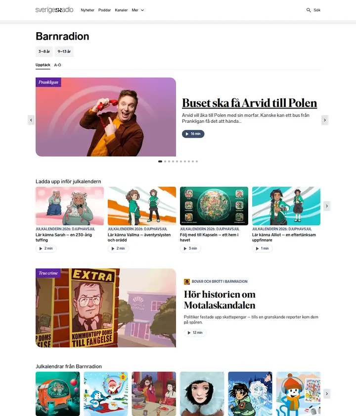
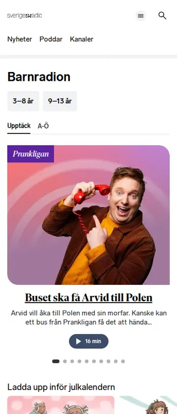

Poddar Source page ↗ Capture layout Desktop Mobile Latest · 20 November 2026 at 12:02:271440 × 6770 px Latest · 20 November 2026 at 12:02:38390 × 7606 px
Barn Source page ↗ Capture layout Desktop Mobile Latest · 20 November 2026 at 12:02:481440 × 8290 px  Latest · 20 November 2026 at 12:02:59390 × 8924 px 
Barn 3-8 år Source page ↗ Capture layout Desktop Mobile Latest · 20 November 2026 at 12:03:091440 × 7272 px Latest · 20 November 2026 at 12:03:21390 × 7970 px
Barn 9-13 år Source page ↗ Capture layout Desktop Mobile Latest · 20 November 2026 at 12:03:291440 × 6045 px Latest · 20 November 2026 at 12:03:38390 × 6581 px